信息拼贴带来的真实与虚幻 | Lois Notebaart 「艺术访谈」
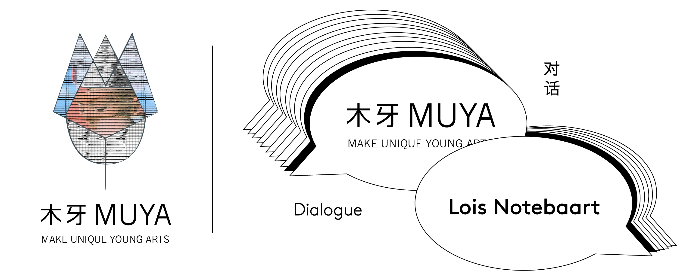欢迎来到木牙Make Unique Young Arts，让我们来粘粘贴贴，裁裁剪剪，拼拼凑凑～
“我们应该更新我们的大脑吗?”
“Should we upload our brain”
“进化我们的身体迎合道德吗?”
“Is it ethical to evolve our body?”
“我们说的语言会影响我们的思维方式吗?”
“Does the language we speak shape the way we think?”
在这繁忙又千篇一律的生活中，总是会有着一群可爱的人们。将那些条条框框，个人非个人的，世俗的超脱自然的糟糕烦恼以可爱，有趣，搞怪的方式来呈现在世人的眼前。纷乱繁杂的大时代信息充满着- 真假难辨，错综复杂 - 大量的信息充斥着我们的大脑，我们的日常，和这庞大的世界。
今天我们邀请了Lois Notebaart来到木牙MUYA和我们一起分享她涂涂改改，粘粘贴贴的可爱日常，对于真实和虚假的讨论，以及这些有趣的作品～
In this busy and uniform life, there will always be a group of lovely people. The rules, the personal, the impersonal, the mundane, the transcendental, the terrible troubles are presented to the world in a cute, funny, whimsical way. Our world is full of information -- real and fake, complicated -- and the amount of information that fills our brains, our daily lives, and our vast world.
We have invited Lois Notebaart to MUYA to share with us her lovely daily routine of collecting, collaging, and pasting, discussion of the idea of relationship between real and the false based on her interesting works~
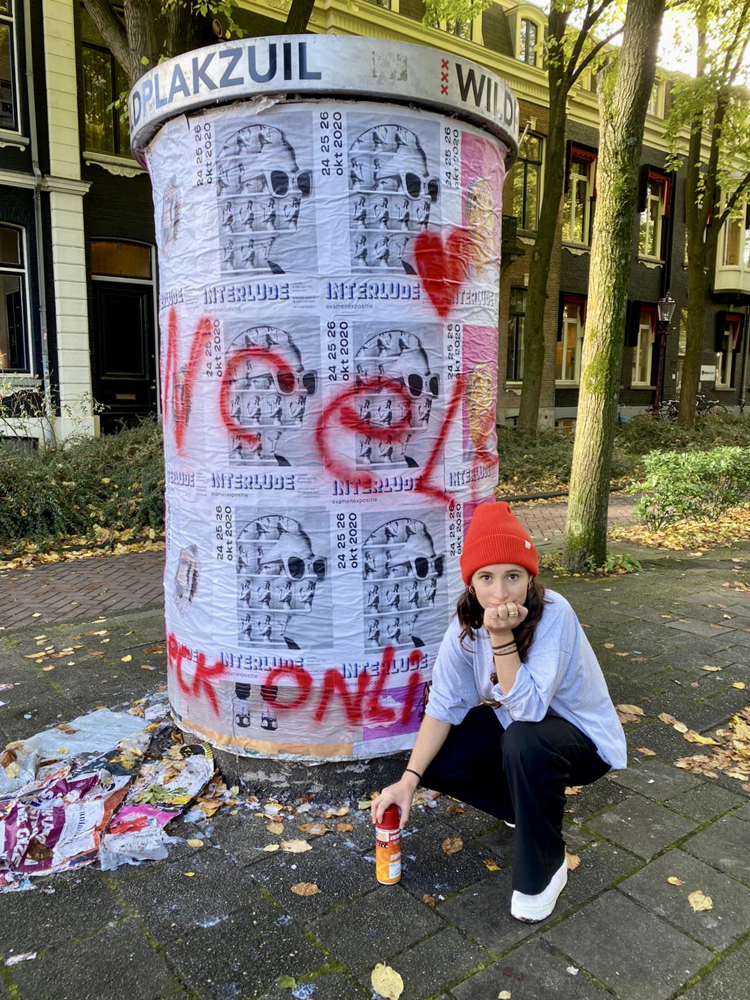
我的名字是Lois(1995)，我出生在荷兰，但是我在美国(亚利桑那州和蒙大拿州)和法国(巴黎)长大。目前住在荷兰阿姆斯特丹。我曾就读于阿姆斯特丹的摄影学院并在那里完成了我的文学学士学位。在我大学二年级的时候，我在南非开普敦和摄影师罗伯特·科恩一起实习。
除了艺术，我对科学和语言特别感兴趣，目前我正在学习俄语。我的兴趣很广泛，为巴茨和赫特斯坦德利克博物馆(Barts and Het Stedelijk Museum)等大客户工作，但在艺术领域也做得很好。我从事的项目可能与我开始的个人项目有所不同，但它们都是在同一个工作室开始的，需要做大量的研究和书籍。
My name is Lois (1995) I am born in The Netherlands but I have lived in the United States (Arizona and Montana) and France (Paris) while growing up. Currently based in Amsterdam, The Netherlands. I have attended the Academy of Photography in Amsterdam and completed my bachelor of arts there. During my second year of school I interned with photographer Robert Koene in Cape Town, South Africa.
Besides the arts I am particularly interested in science and language, and I am currently studying the Russian language. With a broad interest I work for big clients like Barts and Het Stedelijk Museum but also maneuver really well in the art scene. The projects I take on may vary from the personal projects I start, but they begin in the same studio with a lot of research and books.
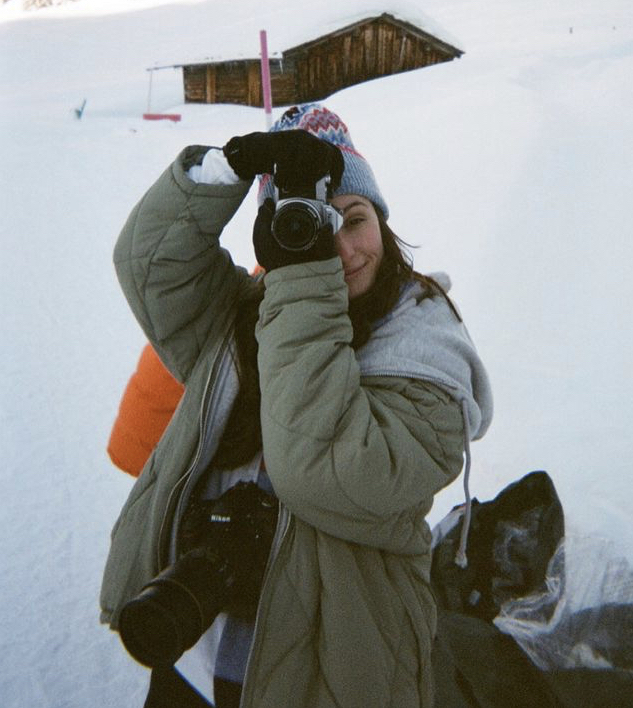

我的艺术特色在于用铝材和拼贴的三维层来工作，并用我自己建造的木框架来保护。我选择的主题都是问题，政治的，个人的，道德的问题，这些问题真的不能或者不应该被回答。像这样的问题:“是我们在塑造我们的大脑吗，还是我们的大脑塑造了我们?”或者“进化我们的身体是合乎道德吗?”“你会更新你的大脑吗?”等等……
我觉得这个世界是动态的，不断变化的。我解构了我的世界，用这些碎片来构建新的图像、照片和视频。在一个现实是支离破碎的信息集合的世界里长大，艺术是我处理它的方式。不断被世界上所有的新闻和故事淹没，我们不可能过滤掉哪些是重要的，哪些是“真实的”。
创作图像对我来说很有用，我制作的每一幅图像都有一个我无法回答的问题，但当作品完成后，我可以感觉到我的大脑为无法回答的问题腾出了更多的空间。我来自一个以科学为导向的家庭，解读和操控这个世界对我来说都是很平常的，我想成为这些世界之间的桥梁搭建者。即使这仅仅意味着需要更多思想来谈论的研究和发明会引起注意。例如:“我们应该更新我们的大脑吗?”“进化我们的身体合乎道德吗?”“我们说的语言会影响我们的思维方式吗?”“每一件作品都附有对灵感来源的详细解释。
My art characterizes itself for the three-dimensional layers of aluminum and collage way of working, protected with wooden frames I built myself. The subjects I choose are questions, political, personal, ethical questions that really can’t or shouldn't be answered. Questions like: 'Are we shaping our brain or are we shaped by our brain?' or ' Is it ethical to evolve our body?' ' Would you upload your brain?' and so on...
I experience the world as dynamic, continuously changing. I deconstruct my world and use the pieces to construct new images, stills and video’s. Growing up in a world where reality is a shredded collection of information, art is my way of dealing with it. Being constantly flooded with all the worlds news and stories it is impossible to filter out what’s important and wants “real”.
Creating images works for me, every image I make holds a question I can’t answer but as soon as the piece is done I can feel my head making a little more space for news unanswerable questions. Coming from a science oriented family reading and maneuvering in this world comes naturally to me, I would love to be a bridge builder between these worlds. Even if that would only mean getting attention for research and inventions that need more minds talking about it. For example: “Should we upload our brain” “Is it ethical to evolve our body?” “Does the language we speak shape the way we think?” Every piece comes with an elaborate explanation about the origin of the inspiration.
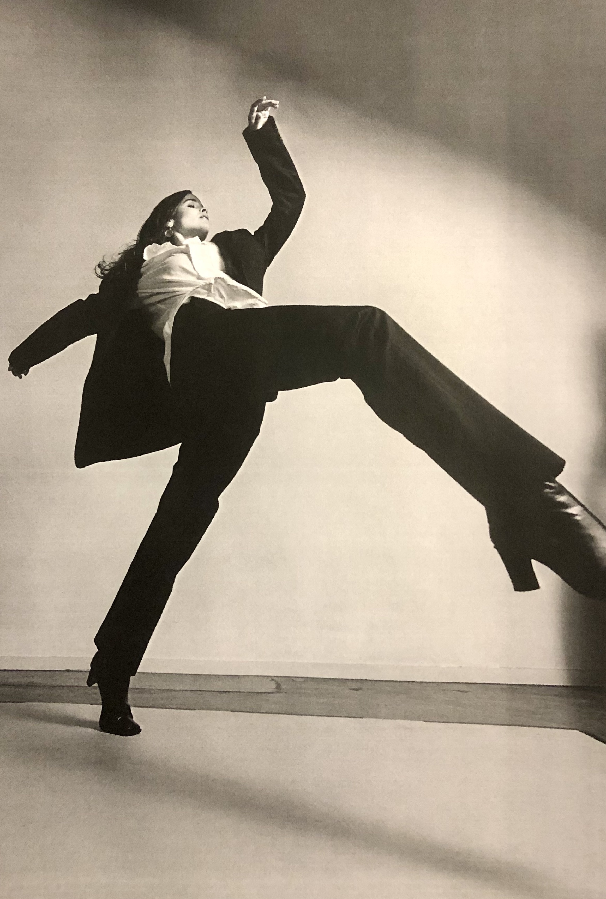

➤ 木牙MUYA: 在当下的信息和网络膨胀的时代，每条信息的发觉和传达，都不可避免的饱含着主观观念的介入，Lois觉得作为信息的接受者，如何探寻“事实”的本身的呢？
In the current era of information and network expansion, each piece of information's discovery and transmission inevitably involves multiple subjective ideas. Lois thinks that, as the receiver of information, how to explore the "truth" itself?
Lois Notebaart: 没有(绝对的)真理。关键是问对问题。我意识到，这些问题也存在假设。例如，你问这样的问题:“什么时候拥挤会变得过分拥挤?”“我想每个人都同意我们生活在一个拥挤的世界，并正在走向过度拥挤。我真的相信没有任何一个是事实，但也许我们可以开始在这些问题上达成一致。
There is no (absolute) truth. It’s all about asking the right questions. I am aware that the problems also hold assumptions. For example, you ask a question like: “when does crowded become overcrowded?” I assume everybody agrees that we are living in a crowded world, moving towards being overcrowded. I honestly believe there isn’t any-one truth, but maybe we can start to agree on the questions.
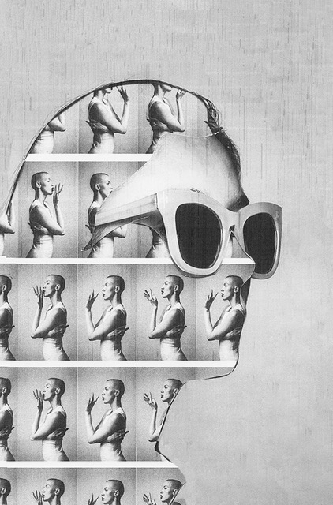
➤ 木牙MUYA: “Am I over-thinking this?” 这个项目很有趣，让我们开始思考如何在思考的过程中达到一种平衡点，很时候事情的本身是很简单的，却被我们过度思考而变得复杂，Lois能再多谈谈，在生活中，当你思考和面对一件事情的时候，是如何看待过度思考的这个话题的呢？
“Am I overthinking this?" This project is exciting and gives us an idea to wonder how to balance the process of thinking. Most things in themselves are straightforward, but we think it too much and complicated. In your life, will you always “over-thinking,” and how do you avoid overthinking?
Lois Notebaart: 我可以通过创作一件艺术作品来对抗过度思考的恶魔，它是关于那些现在或将来都无法回答的大问题。对我来说，创作一件对我来说能够思考问题的作品是一种治疗方法，让我在脑海中创造一个新的空间，来过多思考其他事情。
I can fight the overthinking demon by making a work of art about the too-big questions to answer now or maybe ever.… Creating a piece that holds the question for me is a therapeutic way to make new space in my mind to overthink something else.
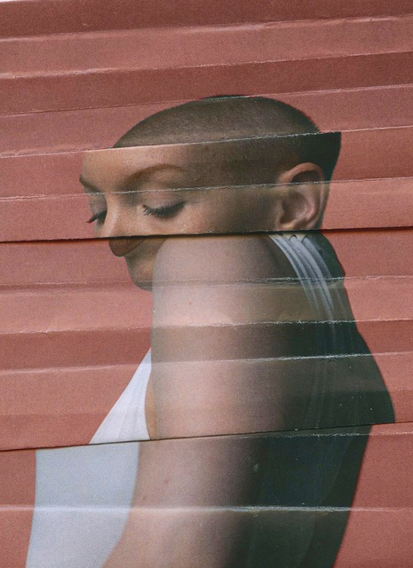
➤ 木牙MUYA: Lois的作品有许多对于性别概念下意识的去模糊。不知道Lois是如何理解艺术中的性别概念的？或者想要传播怎样的思想？
Lois's work has a lot of subconscious defuzzification of gender concepts. I wonder how Lois understands the concept of gender in art? Or what kind of ideas do you want to spread about gender?
Lois Notebaart: 我是一个舞者，我喜欢通过身材和衣服让我分心，所以直觉上模特的身体比她们的脸更重要。我经常把他们脸排除在作品之外，你放置身体的方式可以给你的图像带来某种感觉，这会比一个外貌更直接。性别成见与我的作品很少的关联。
I am a dancer, and I like bodies and clothes to distract me, so intuitively model's bodies are more important than their faces. I often even leave their face out of work. The way you place your body can give a certain feeling to an image that might feel too literal with a look. Gender stereotypes are less and less relevant to my work.
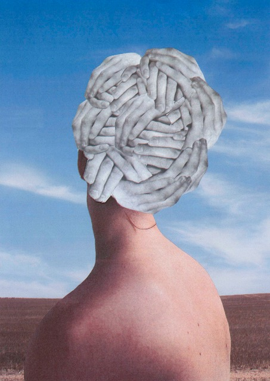
➤ 木牙MUYA: Lois的作品让我联想到了超现实主义绘画的创作，超现实主义画作受到社会和生活的影响通过画家思维的抽象绘制达到一种奇幻的社会映射，在Lois的拼贴创作中，如何进行构思和画面重组的呢？
Lois's works remind me of surrealist paintings. Influenced by society and life, surrealist paintings reflect a fantastic social mapping through the abstract drawing of the painter's thinking. In Lois's collage art, how do you carry out the conception and material reorganization?
Lois Notebaart: 这基本上是一个直观的过程，没有潜在的规则或概念，我知道。我开始使用拼贴画，因为我觉得一张图片是不够完整的。如果你只是拍一张满是房子的街道，在我看来就只是带着房子的街道。我知道这听起来有点混乱，但我觉得这个世界就是很多支离破碎的信息和观点，把它们拼贴在一起会让你看到一个更全面的世界。
This is an intuitive process, and there are no underlying rules or concepts I am aware of. I started working with collages because I felt that one image just wasn’t complete enough. If you’d take a photo of a street with houses，it would just be my view of that street with houses. So I know this sounds kind of chaotic, but I feel that the world is just a lot of shredded pieces of pieces of information and views and collaging them together gives a rounder view of the world.
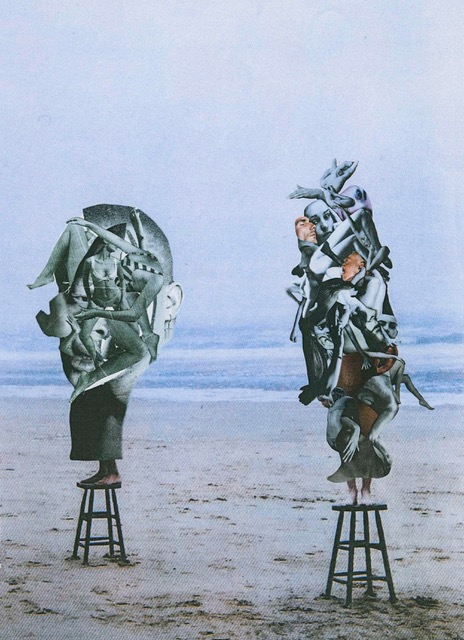
➤ 木牙MUYA: 黑白拼贴和彩色拼贴需要大量的材料和杂志，Lois平时是在哪里找寻自己合适的剪裁媒介？
Black and white collage and color collage require a lot of materials and magazines. Where does Lois find a suitable tailoring medium?
Lois Notebaart: 现在我自己拍摄所有的原始材料，在我的新作品中，我有时会使用60或70年代以前的旧报纸和杂志中的图像，但这主要是因为我有一个出版物的截止日期，没有足够的时间来自己拍摄。
Now I shoot all the source material myself. In my new work, I sometimes use images from old newspapers and magazines out of the 60/70ths, but that is mainly if I have a publication with a deadline and not enough time to shoot by myself.
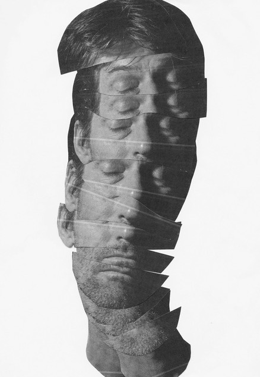
➤ 木牙MUYA: 重叠在Lois的作品中反复出现， Lois可以讲讲为什么要选择重叠这样的方式作为自己主要创造手法？
Overlaps repeatedly appear in Lois's works. Can Lois talk about why you chose overlap as your primary creative technique?
Lois Notebaart:就像在日常生活中一样，并非所有的碎片都整齐地契合。如果你说的是拼贴画本身的视觉重叠，那就是我的工作方式。凭借直觉来移动图像去创作一个新的更贴合我脑海中的图像或事物。如果你认为重叠的使用是在用相同的图像或者相同图像的部分，那答案依旧是同样的。这仅仅只是凭借直觉的一种工作方式同时也是图片本身的一种重复，图像层的重叠就像是重复的日常生活本身。
As in everyday life, all the pieces do not neatly fit. If you're talking about the visual overlaps of collages themselves, that is just my way of working... Intuitive moving around images to create a new, more fitting picture to the subject I have in mind. If you mean the overlap in using the same images or parts of the same image, the answer is as well. It is not only an intuitive way of working but also the repetition of the images themselves. This feels like the layers of day-to-day life which overlap and repeat themselves.
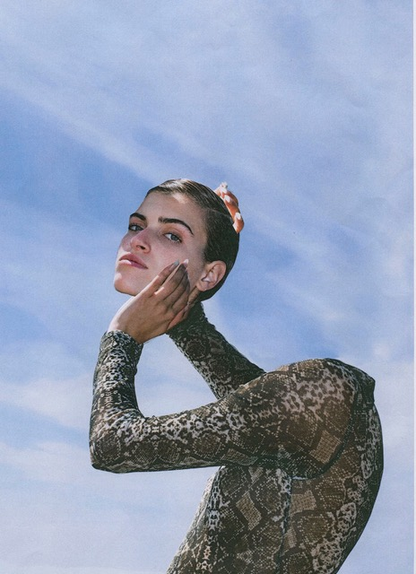
➤ 木牙MUYA: 在创作或者生活中，我们或多或少都会遇到问题，这些问题我们无法解答，Lois面对问题的时候，寻求什么样的方法去尝试探索和解决呢？
In both our art creation and daily life, we will encounter some problems, which we cannot answer and figure out. When Lois meets the issues, what kind of methods will he seek to explore and solve?
Lois Notebaart:所以就像我之前说的，我不知道或者甚至没有任何答案。即使相信答案存在，我也感觉不对。我甚至无法理解这些大问题，所以我把它放在了艺术上。虽然我相信，如果你没有决心“解决”一个问题，只是把它留在你的脑海里，或在你挂在墙上的艺术作品，你给自己更多的时间来适应特定的问题和观点。给自己一些时间，给别人一个机会去评论这个话题，然后，在那一刻，慢慢地向你认为正确的答案靠拢。
Like I said before, I do not have the or even any answers... even believing there is an answer feels wrong to me. I can't even wrap my head around these huge questions, so I put them in art. Though I do believe that if you aren’t determined to “solve” a problem, leave it sitting in your mind or in a work of art. You can hang it on your wall and give yourself more time to adjust these specific questions and viewpoints. You can also give yourself some time to invite other people to comment on your subject and, at that moment, slowly move towards what feels like the right answer to you.
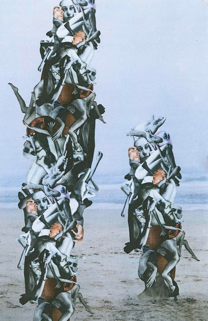
➤ 木牙MUYA: Lois平时是如何向观众介绍自己的作品的？会在哪些平台售卖和是怎么界定作品价格的？除了做作品，Lois还喜欢做哪些事情来帮助自己的事业发展，灵感以及放松心情？
How does Lois generally introduce your work to the audience? which platforms will you generally sell your pieces? How do you define the prices of works? In addition to creating artwork, what other things does Lois enjoy doing to assist your career development, inspiration, and relaxation?
Lois Notebaart:我只是尽我所能多做点事。不听别人的判断和规则对我来说并不是什么难事。幸运的是，这对我来说很容易。我想我尝试做任何让我感觉好的事。这招对我很管用，努力工作，做真实的自己。我开始卖东西给我认识的人，然后事情就开始了。现在我做作业，出版作品。
我想我的听众是广泛的，从那些可能还不被允许投票的人到那些被困在自己的道路上的人。我想让他们所有人都知道，一个女孩可以拥有梦想! 我决定价格基于在作品的打印数量，我也会计算进我在作品和作品数量上的工作量。我参与了多个项目，比如创办一个节日，制作商业广告，以及与画廊和科学组织合作更重要的项目。我喜欢去博物馆，但我最大的灵感来自于生活总是遇到各行各业的各式各样的人。
I am just trying to make everything as much as I can. I don't have a lot of trouble not listening to other people's judgments and rules. This luckily comes easy to me. I guess I try to do anything and everything that feels good. This works for me, work hard and stay true to yourself. I started selling pieces to people that I know, and then the ball just started rolling. Now I make works as assignments and have publications.
I want to think my audience is broad, from people who might not even be allowed to vote yet to people who are so stuck in their ways. I want to reach them all. A girl can dream! I decide the prices based on the amount of prints，I will make of a piece and the amount of work it has cost me. I work on multiple projects, like developing a festival, making commercials, and working with galleries and scientific organizations for a more significant project. I love going to museums, but my biggest inspiration comes from meeting all different kinds of people from all walks of life.
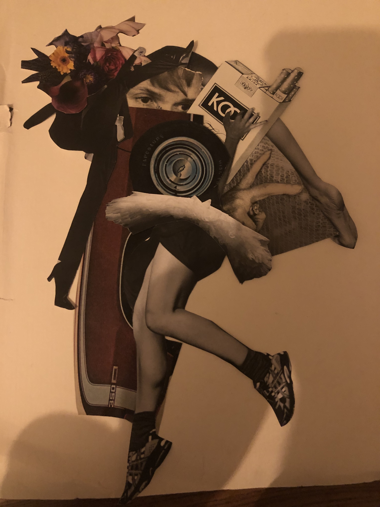
✯ Which inspire your works most ✯
“Je bent je eigen uitgangs punt” this is Dutch and it literarily means that you are your own starting point, obviously you believe everything you believe but that doesn’t mean its the truth.. its your truth. And: Colour my life with the chaos of trouble from the band Belle and Sebastian.
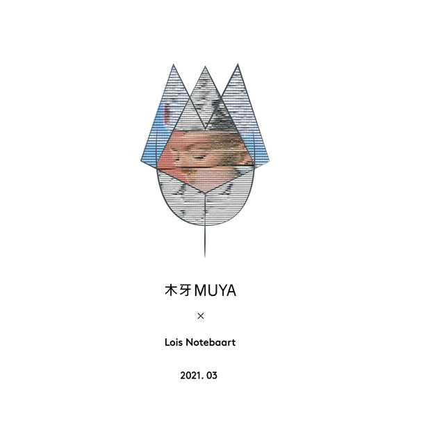
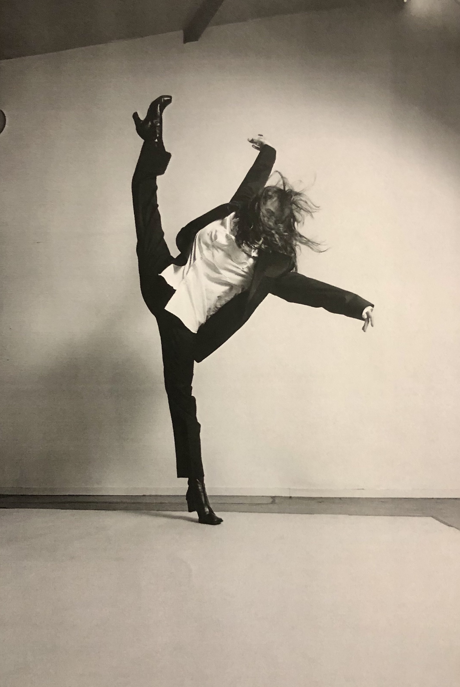
木牙微信订阅号